November 2022 (version 1.74)
Update 1.74.1: The update addresses these issues.
Update 1.74.2: The update addresses these issues.
Downloads: Windows: User System Arm64 | Mac: Universal Intel silicon | Linux: deb rpm tarball Arm snap
Welcome to the November 2022 release of Visual Studio Code. There are many updates in this version that we hope you'll like, some of the key highlights include:
- Customize Explorer auto reveal - Decide which files scroll into view in the Explorer.
- Hide Activity bar and Panel badges - Simplify the editor UI by toggling state badges.
- Audio cues for notebooks and diff view - Sounds for cell run results, added or removed lines.
- Merge editor Undo/Redo - Quickly revert or reapply merge conflict actions.
- Manage unsafe repositories - Prevent Git operations on folders not owned by you.
- JavaScript console.profile collection - Easily create CPU profiles for viewing in VS Code.
- Go to Definition from return - Jump to the top of JavaScript/TypeScript functions.
- Remote Tunnels - Create a connection to any machine, without needing SSH.
- Jupyter notebook "Just My Code" debugging - Avoid stepping into Python library code.
- Dev Container GPU support - Request a GPU when creating a Dev Container.
If you'd like to read these release notes online, go to Updates on code.visualstudio.com.
Insiders: Want to try new features as soon as possible? You can download the nightly Insiders build and try the latest updates as soon as they are available.
Accessibility
Audio cues for notebook execution
There are now audio cues for when notebook cells finish running. The cue is different to indicate whether the cell ran successfully or failed.
Audio cues for diff review mode
In a diff editor, when Go to Next Difference is triggered, a specific audio cue will play to indicate whether the cursor is on an inserted or deleted line.
If you are curious about the available audio cues, you can hear them via the Help: List Audio Cues dropdown.
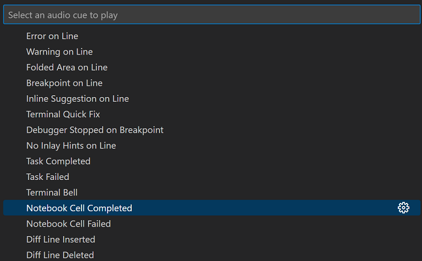
Keyboard-navigable Settings editor indicators, hovers, and links
The indicators, hovers, and links in the Settings editor are now navigable by keyboard. The styling of some of the links have also been adjusted for better consistency across the Settings editor.
Settings editor indicator hovers now behave much better when it comes to tabstops and maintaining keyboard focus. This improved behavior is still experimental, and is currently only enabled for the Settings editor indicator hovers, rather than for all hovers across VS Code.
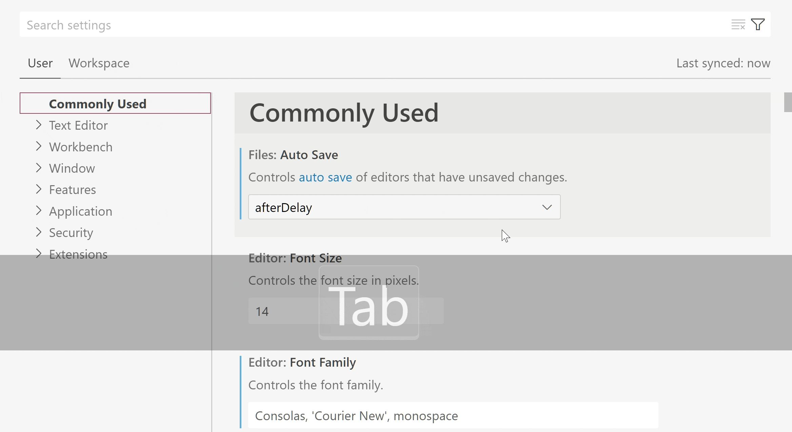
Theme: Light Pink (preview on vscode.dev)
Workbench
Custom Explorer autoreveal logic
The highly upvoted issue #87956 ("Allow to set explorer.autoReveal per specific folder") has been fixed by the introduction of a new setting explorer.autoRevealExclude. This setting lets you configure which files get autorevealed in the Explorer if the autorevealing is enabled (explorer.autoReveal, default true). The autoRevealExclude setting uses glob patterns for excluding files and similar to files.exclude, also supports sibling matching via when clauses.
The default value excludes node and bower modules:
{
"explorer.autoRevealExclude": {
"**/node_modules": true,
"**/bower_components": true
}
}
Hide badges per view container
Similar to how you were able to hide view containers by right-clicking the view container, you can now hide the badge on the container (displayed in the Activity bar, Panel, and Secondary Side bar). Badges often display a number, icon, or progress indicator for a specific view container, for example, the number of pending changes for the Source Control view.
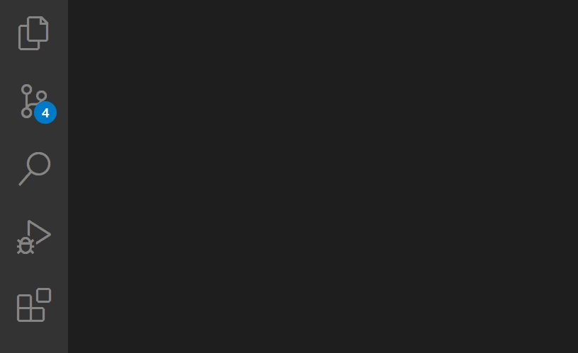
Merge Editor
This release ships some improvements and bug-fixes for the merge editor. Highlights include:
- Undo/Redo now tracks the handled state of conflicts.
- Ignore actions in the input views can be used to accept the base version instead of the Mark as handled action in the result view.
- Changes that are equal on both sides are now automatically resolved.
- Extensions that provide
git blamefunctionality now work in the incoming, current, and base editors.
Install an extension located on disk
You can now install an extension that is located on a local disk drive by using Developer: Install Extension from Location... command. The command will open the platform folder dialog to select the location of the extension's .vsix file.
Editor
New word break option for CJK characters
A setting called editor.wordBreak can now be used to avoid inserting wrapping points after CJK characters. When configured with keepAll, the wrapping algorithms will try to keep text after CJK characters on the same line. This setting doesn't have any effect on characters from other scripts.
New font setting for OpenType fonts
Some newer fonts, which support OpenType font variations, support tuning certain axes, like the font weight axis, to achieve font weights that are not configurable via the font-weight CSS property. In CSS, this is achieved with the font-variation-settings property. If you use such a font, you can now configure editor.fontVariations to true, which will result in VS Code using the "wght" display axis for setting the font weight. If your font supports other axes, it is also possible to configure them directly, for example by setting "editor.fontVariations": "'ital' 0.5".
New indent size setting
There is a new setting called editor.indentSize that allows to dissociate the indent size (the number of spaces that make up an indent) from the tab size (the number of spaces that are used to render a Tab character). This is useful when dealing with files that use mixed tabs and spaces indentations and can be exercised only when using manual indentation configuration.
Below is an example configuration:
"editor.detectIndentation": false,
"editor.insertSpaces": true,
"editor.tabSize": 8,
"editor.indentSize": 2
Command to partially accept inline completions
The command Accept Next Word Of Inline Suggestion (editor.action.inlineSuggest.acceptNextWord) can be used to accept the next word/non-word segment of the current inline suggestion. Currently, it can only accept parts of the first line of an inline suggestion. The command is still under development and we are exploring keyboard shortcuts along with alternative splitting rules for future releases.
Source Control
Manage unsafe Git repositories
VS Code uses git.exe for executing all Git operations. Starting with Git 2.35.2, users are prevented from running Git operations in a repository that is in a folder owned by a user other than the current user, as the repository is deemed to be potentially unsafe.
Starting with this release, if you try to open such a potentially unsafe repository, VS Code will show a welcome view in the Source Control view as well as an error notification. Both the welcome view, and the notification expose the Manage Unsafe Repositories command that lets you review the list of potentially unsafe repositories, mark them as safe, and open them. The Manage Unsafe Repositories command is also available in the Command Palette. Marking a repository as safe will add the repository location to the safe.directory git configuration.
Optimistic user-interface updates
After executing a Git operation, a set of git commands (for example, git status) are executed to update the data model before the Source Control view is updated. There are scenarios in which running these commands can take several seconds to complete (for example, when working with large monorepos), resulting in a delay before the Source Control view is refreshed.
This milestone we have made changes so that the Source Control view is optimistically updated for some of the Git operations (stage, unstage, discard changes, and commit) before git status completes, resulting in a snappier Source Control view.
The new capability is enabled by default but it can be disabled using git.optimisticUpdate: false.
Commit action button polish
When the Commit action button is executing a secondary commit command (for example, Commit & Sync), the button label now correctly reflects the command being executed. The Commit button also shows an animation indicating progress.
Terminal
Terminal Quick Fix improvements
Terminal Quick Fixes are now presented in a Code Action control to align with the experience in the editor.
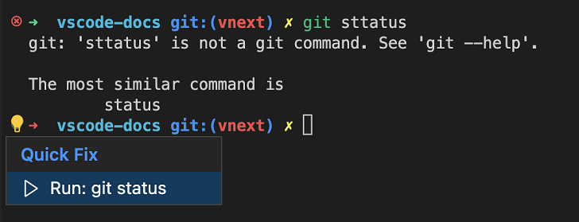
Task actions in the terminal dropdown
The Run Task and Configure Tasks commands appear in the terminal dropdown for increased discoverability and ease of access.
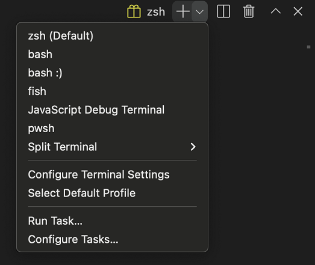
Remote Development
Remote Tunnels is now available as a preview feature on VS Code Stable. Remote tunnels allow you to securely access your machine with VS Code from any device, anywhere. To enable remote tunnel access, you can either:
- Choose Turn on Remote Tunnel Access from the Account menu or Command Palette.
- Run
code tunnelfrom a machine with VS Code installed and on the PATH. - Download the new VS Code CLI and run
./code tunnel.
Once tunnel access is turned on, you can connect to the machine from any device using vscode.dev, or using the Remote - Tunnels extension from within VS Code Desktop.
To find out more, check out our blog post announcing the feature or the Remote Tunnels documentation.
Theme: Codesong (preview on vscode.dev)
Note: If you were using the standalone
code-serverCLI, you should now use the VS Code CLI (via the latest VS Code Desktop or the standalone download mentioned above) instead.
Debugging
JavaScript debugging
Support for console.profile
The JavaScript debugger now supports console.profile. When running under the debugger, a CPU profile will be collected for code between console.profile() and console.profileEnd().
console.profile();
doSomeExpensiveWork();
console.profileEnd();
The resulting .cpuprofile file will be saved in your workspace folder, and can be opened and viewed using VS Code's built-in profile viewer.
Support for nested sourcemaps
Sometimes, especially in monorepo setups, source code might be compiled once and then recompiled or bundled again. In many cases, this would result in sourcemaps of the resulting bundle referencing the compiled files created in the first step.
The JavaScript debugger will now automatically resolve sourcemaps recursively, so that the original source files can be debugged without extra steps.
killOnServerStop property added to serverReadyAction
The serverReadyAction launch.json feature enables users to start a debug session that starts a web server, then once the server starts, automatically start debugging a browser navigated to that server's URL. There is a new property, killOnServerStop that when set to true, will cause the new browser debug session to be automatically stopped when the server debug session stops.
For example:
{
"type": "node",
"request": "launch",
"name": "Launch Program",
"program": "${workspaceFolder}/app.js",
"serverReadyAction": {
"pattern": "listening on port ([0-9]+)",
"uriFormat": "http://localhost:%s",
"action": "debugWithEdge",
"killOnServerStop": true
}
}
In the example above, when the original Launch Program debug session is stopped, the automatically started Edge debug session will also be stopped.
Exception breakpoints shown for the focused debug session
Managing exception breakpoints when running two different types of debug sessions did not work well previously. Now, when a debug session is focused in the Call Stack view, the correct set of breakpoints for that session's debug type will be shown.
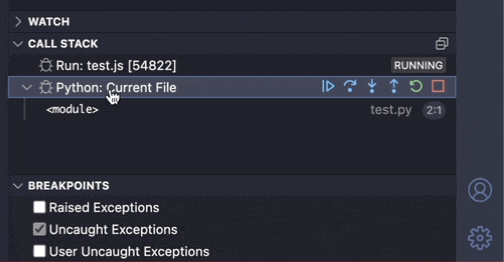
Comments
comments.visible
The new setting comments.visible can be used to turn off editor commenting (the Comments bar and the in-editor Comments Peek view). The command Comments: Toggle Editor Commenting can still be used to toggle editor commenting on and off during a session. Selecting a comment in the Comments view will always toggle commenting on.
Comments view badge
The Comments view shows a badge for the count of unresolved comments.
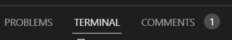
Tasks
Problem matcher 'search' file location method
Previously, problem matchers needed to know exactly where to look for the problematic files, via the fileLocation property. The supported methods were absolute, relative, or autoDetect (check for relative paths first, then look for absolute paths in case of failure).
However, in workspaces that use scripts residing in nested subdirectories, it was difficult to set up tasks as different scripts seldom report file paths in a unified manner (for example, relative to the workspace's base directory).
To help with this problem, there is a new file location method, named search. With this method, a recursive file system search is run to locate any captured path.
The example below shows how to set up the search file location method (although, all parameters are optional):
"problemMatcher": {
// ...
"fileLocation": [
"search",
{
"include": [ // Optional; defaults to ["${workspaceFolder}"]
"${workspaceFolder}/src",
"${workspaceFolder}/extensions"
],
"exclude": [ // Optional
"${workspaceFolder}/extensions/node_modules"
]
}
],
// ...
}
Note that users should be wary of causing time consuming file system searches (for example, looking inside node_modules directories) and set the exclude property appropriately.
Languages
TypeScript 4.9
VS Code now ships with TypeScript 4.9. This major update brings new TypeScript language features such as the satisfies operator and auto accessors. On the tooling side, we've made improvements to file watching and made a number of other fixes and improvements.
Check out the TypeScript 4.9 announcement for more about this update.
Go to Definition on return
JavaScript and TypeScript now support running Go to Definition on the return keyword to quickly jump to the top of the function being returned from. This is helpful when dealing with long, complicated, or highly nested functions. You can use the Go to Definition command/keybinding for this (F12) or simply Cmd/Alt + Click on the return keyword.
Notebooks
Kernel picker experiment: most recently used kernels
There is a new notebook kernel picker that shows the most recently used kernels at the top of the picker. This is an opt-in experiment that can be enabled by setting the notebook.kernelPicker.type setting to mru.
Kernels that are not used will be moved into a secondary picker Select Another Kernel.... This picker will group all kernels by their source (for example: Jupyter Kernel, Python Environment, etc.) when you have latest Jupyter extension installed.

We would love to hear your feedback and you can create issues in the VS Code repository.
VS Code for the Web
Source control
VS Code for the Web now supports the following settings when editing GitHub and Azure Repos repositories:
"git.branchRandomName.enabled"- Generate random branch name when creating branches in VS Code for the Web."git.branchRandomName.dictionary"- Specify word dictionaries for generating random branch names when creating branches in VS Code for the Web."git.closeDiffOnOperation"- Close diff editors after performing source control operations like committing, staging, unstaging changes.
Additionally, VS Code for the Web displays a lock icon in the Status bar and the branch picker for protected branches, aligning with the experience on VS Code Desktop.
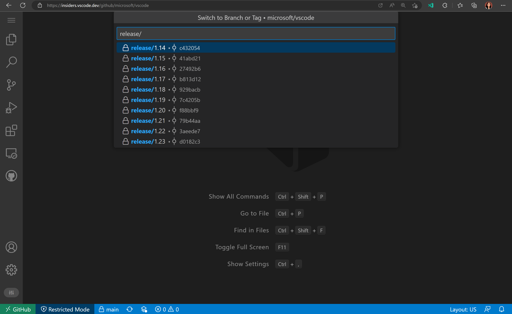
Finally, you can now use the source control action button in VS Code for the Web to commit and push your changes directly to the repository remote:
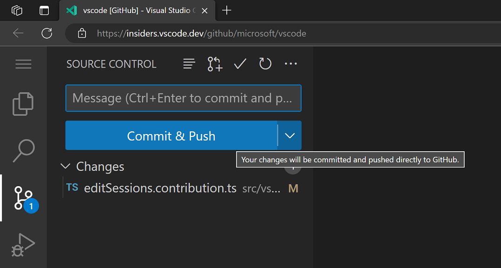
If you wish to validate your changes before committing, you can also use the secondary Continue Working On... action in the action button dropdown to take your working changes to another development environment.
Improvements to Continue Working On
When you are in a GitHub or Azure Repos repository, there are now convenient one step commands available in the Command Palette to take your working changes with you to a specific development environment:
- Continue Working in a New Codespace
- Continue Working in Local Clone
- Continue Working in Remote Repository on VS Code Desktop
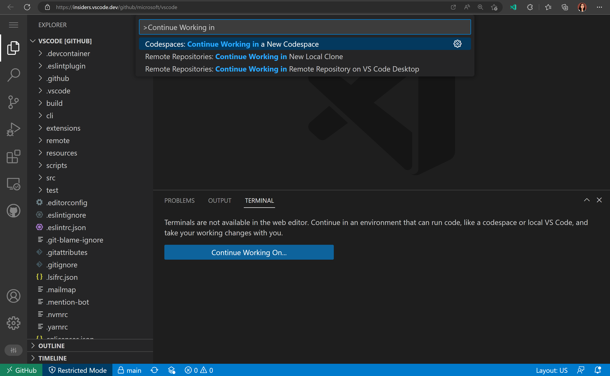
We have also renamed Edit Sessions to Cloud Changes to clarify that it relates to storing working changes in the cloud.
Contributions to extensions
Jupyter
"Just My Code" for notebook cell debugging
The "Just My Code" debug feature allows you to determine whether the debugger will step through code from Python libraries, or will only step through your source code. This has been enabled by default when debugging a notebook cell, but you can set "jupyter.debugJustMyCode": false to disable it and let you step through library code. For the best experience, upgrade debugpy in your environment to >=1.6.3. Previously, the debugJustMyCode setting was only respected when debugging in the Interactive Window and now it is available for notebook editors as well.
Support restarting notebook cell debug sessions
The Restart command in the debug toolbar restarts the current debug session. Previously, this threw an error in notebook debug sessions, but now it is supported. Unfortunately, it can't be properly supported in the Interactive Window.
This feature is especially useful in a workflow where you debug, edit the cell, then restart the debug session to debug the cell again with your edits applied.
Remote Development extensions
The Remote Development extensions, allow you to use a container, remote machine, or the Windows Subsystem for Linux (WSL) as a full-featured development environment. Highlights of this release include:
- Dev Container GPU support
- Dev Container Cygwin / Git Bash sockets forwarding
- Remote - Tunnels extension - Connect to a remote machine without requiring SSH.
You can learn about new extension features and bug fixes in the Remote Development release notes.
GitHub Pull Requests and Issues
There has been more progress on the GitHub Pull Requests and Issues extension, which allows you to work on, create, and manage pull requests and issues. Highlights include:
- Notebooks support for permalink commands.
- Pull request checks status (such as continuous integration (CI) in progress, needs review, CI failed, etc.) is shown in the Pull Requests tree view.
- vscode.dev links for PRs can be copied from the pull request overview.
- The command Go To Next Diff in Pull Request navigates to the next diff in a checked out PR across files.
Check out the changelog for the 0.56.0 release of the extension to see the other highlights.
Preview features
Profiles
We have been working the last couple of months to support Profiles in VS Code, which is one of the most popular asks from the community. This feature is available for preview via the workbench.experimental.settingsProfiles.enabled setting. Try it out and give us your feedback by creating issues in the vscode repository or commenting in issue #116740.
Sharing Profiles
You can now share a profile by exporting it to GitHub as a gist. VS Code will create a secret gist using your GitHub account and provides you a link to share it with others. When you open that link, VS Code will ask you to install the shared profile. During exporting or importing a profile, VS Code will show a preview so that you can review and choose data to export or import respectively.
Here is a video of exporting a profile to GitHub and then copying the link to share it with others:
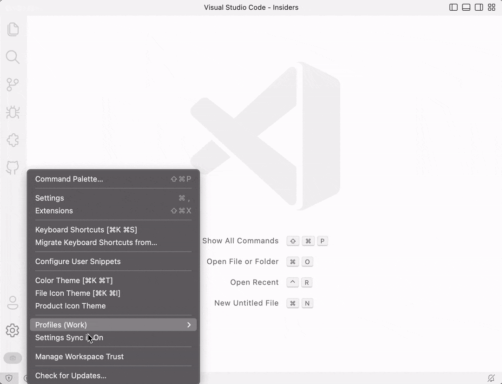
This video shows importing a profile by opening the shared link:
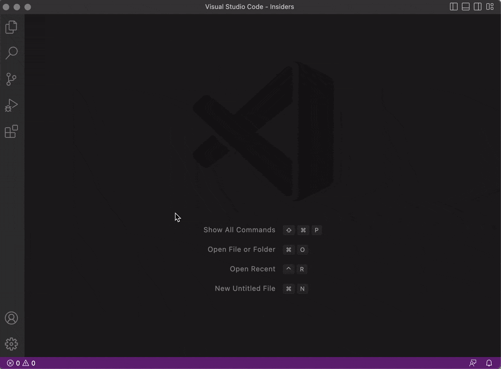
Extension signing and verification
Starting mid-November, all VS Code extensions uploaded to the Visual Studio Marketplace are signed by the VS Marketplace - this process is called repository signing. On every extension install and update, VS Code verifies the extension package signature. With signing and signature verification, we can guarantee extension package integrity and authenticity.
Signature verification is currently only done in VS Code Insiders. If you notice any issues, you can let us know by creating an issue in the vscode repository and you can opt out of signature verification by setting extensions.verifySignature to false. We are working on enabling signature verification in VS Code Stable in the coming months.
Apart from repository signing, we are also starting work on extension publisher signing.
Python execution in the Web
We added debugging support to the Experimental - Python for the Web extension. The debugger supports the following features:
- Setting breakpoints
- Stepping into and out of functions
- Debug across modules
- Evaluate variables in the debug console
- Debug the program in the Integrated Terminal
The screenshot below shows debugging a Hello World program
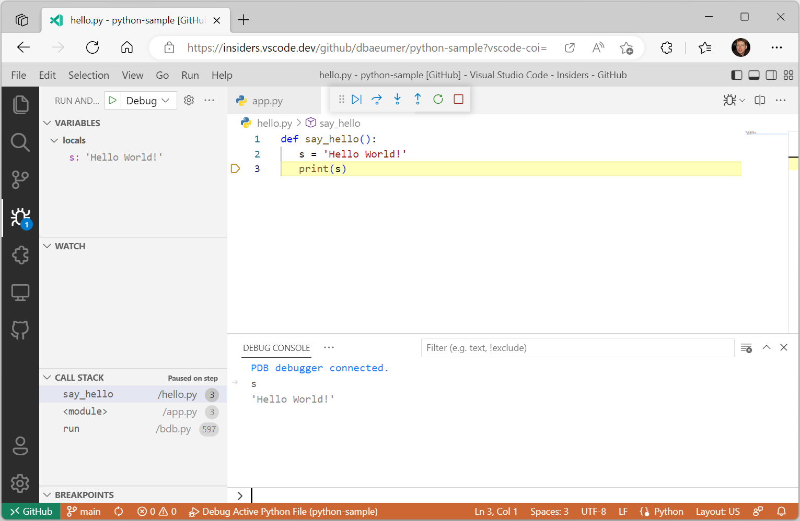
Note that using the extension still requires you to add the following query parameter to the browser URL ?vscode-coi=.
Extension authoring
Implicit activation events for declared extension contributions
This milestone we removed the requirement to explicitly list activation events if your extension declares certain extension contributions in its package.json.
Previously, if an extension declared that it contributed a command mycommand in its package.json file, it also needed to list the corresponding onCommand:mycommand activation event in the activationEvents field of package.json for the command to successfully execute. This was tedious and error-prone and could lead to large package.json files.
VS Code will now automatically populate activation events for the following extension contribution points:
| Contribution point | Inferred activation event |
|---|---|
commands |
onCommand |
authentication |
onAuthenticationRequest |
languages |
onLanguage |
customEditors |
onCustomEditor |
views |
onView |
Extension authors can now safely remove these inferred activation events from your extensions. If you do so, update your VS Code engine requirement to ensure that your extension is not treated as compatible with earlier versions of VS Code:
"engines": {
"vscode": "^1.74.0"
},
Log output channel
This milestone we finalized the LogOutputChannel API. You can now use this API to create a log output channel that will be used to log messages from your extension.
We also finalized the logLevel property and the onDidChangeLogLevel event in the env namespace to indicate the current log level of the application and fire an event when the log level changes for the application.
Consistent origin for all webviews
Following up on our work last iteration, all webviews in VS Code now try to maintain custom origins. With 1.74, this also extends to the webviews used by custom editors.
This improves performance by allowing webview content to be cached in more cases. See the previous release notes for more details and things to be aware of as an extension author.
Video tag support in extension README
Extensions can now use <video> tags in their READMEs. Videos are supported on both the VS Code Marketplace and on Extensions view pages in VS Code. Compared to .gifs, video files are higher quality and often smaller too. You can even include audio!
Keep in mind that only specific video and audio formats are supported in VS Code itself. At present, you must also use a full path to the <video> src and poster instead of a relative path.
Comment thread additional actions
The new menu location comments/commentThread/additionalActions allows extensions to contribute always-visible buttons to comment threads.
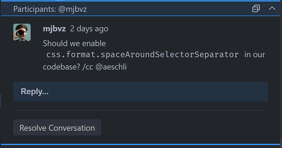
Renaming of vsce to @vscode/vsce
The vsce tool, VS Code's extension manager, has been renamed to @vscode/vsce. This is a breaking change for anyone using the tool as a library. The CLI tool is still called vsce and can be installed via npm install -g @vscode/vsce.
Debug Adapter Protocol
Several clarifications and a new property were added to the Debug Adapter Protocol.
- The
DataBreakpointInforequest has a new optionalframeIdproperty. Clients can use this flag to specify which stack frame contains anamevariable. - End-of-file behavior is now specified for the
readMemoryrequest.
Engineering
Name mangling of properties and method
Our product build now mangles names of properties and methods. This reduced the size of our main bundles by ~13% (-1.5 MB) and reduces code loading times by ~5%.
GitHub & Microsoft Authentication extensions bundle size improvements
The bundle sizes for these two extensions were larger than we wanted them to be, given what they provided and how critical they are for startup in many cases (such as vscode.dev). This milestone, we focused on decreasing the size of these extensions and here are the results:
- GitHub Authentication: 93 KB -> 64.9 KB
- Microsoft Authentication: 97 KB -> 57.7 KB
This was achieved by:
- No longer depending (and bundling) node modules that provided functionality that is readily available in Node.js and the web (for example, removing
uuidin favor of Crypto.randomUUID()). - Only using
node-fetchin Node.js, instead of using it for both Node.js and the web. - Adopting the newest version of
@vscode/extension-telemetry, whose size decreased considerably.
No functionality was lost in this process and these extensions are now fetched and loaded faster due to their decreased size.
Electron sandbox journey
You can learn about our progress toward enabling Electron's sandbox in the recent "Migrating VS Code to Process Sandboxing" blog post. This detailed article presents the technology timeline and describes the incremental changes made to support VS Code sandboxing.
If you want to try out VS Code sandbox mode, you can set "window.experimental.useSandbox": true in settings. Hopefully you should not notice any functional differences, but if you find issues, please report them back to us.
Window Controls Overlay re-enabled by default on Windows
The Window Controls Overlay (WCO) has been re-enabled by default. It was previously enabled in August, but then disabled again, because it was rendering on the wrong side for users using right-to-left system languages, covering up the File and Edit menu items.
The main issue was that VS Code wasn't passing the application locale to Electron, so Electron used the system locale to determine where to place the WCO. However, VS Code relied on Electron's app.getLocale() API to obtain the system language and determine what language pack to recommend, and passing in the application locale to Electron resulted in app.getLocale() returning that same locale instead of the system language.
To fix the issue, we added a new app.getPreferredSystemLanguages() API to Electron so that even after passing the locale to Electron, we can still get the system language to use for VS Code's language pack recommender, while keeping the WCO on the right side.
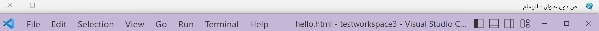
Built-in extensions now use the new l10n API instead of vscode-nls
Last month we stabilized the new Localization (l10n) API. This month, we have adopted that API in every extension found in the Microsoft/vscode repository. We still need to move language servers over to using @vscode/l10n instead of vscode-nls as well as some other extensions owned by the team (JS Debug, Python, Jupyter Notebooks, etc.) but we are moving in the right direction to a single localization story for all of our extensions.
Notable fixes
- 166171 Remove the default scroll bar in the extensions' tip modal.
- microsoft/vscode-jupyter#11745 Variables viewer causes slowness and instability
Thank you
Last but certainly not least, a big Thank You to the contributors of VS Code.
Issue tracking
Contributions to our issue tracking:
Pull requests
Contributions to vscode:
- @Albert-cord: feat: Add wordBreak editorOption and use it to lineBreakComputer function PR #156242
- @andschwa (Andy Jordan): Support shell integration in Windows PowerShell PR #167023
- @babakks (Babak K. Shandiz)
- 🐛 Fix repeated CWD entries when creating new terminal in multi-root workspace PR #153204
- 🎁 Add
killOnServerStopto debug configuration PR #163779 - 🎁 Add
searchto file location methods in tasks PR #165156 - 💄 Include file system path in debug mode's URI/link hovers PR #165709
- 🔨 Add "Focus Breadcrumb" to command palette PR #166461
- @CGNonofr (Loïc Mangeonjean): Standalone configuration: use resource and language PR #146522
- @chengluyu (Luyu Cheng): Support variable fonts (#_153291) PR #153968
- @cmarincia (Catalin Marincia): Add list of strings option to editor.fontFamily PR #164289
- @d0ggie (Pekka Seppänen): Restore bracket match CSS syntax (#_166109) PR #166141
- @dmartzol (Daniel Martinez Olivas)
- Moves css rules from links.ts to links.css PR #166258
- moves css rules PR #166532
- @ecstrema (Rémi Marche): Editor state change, break after match PR #166283
- @felixlheureux (Felix L'Heureux): Reset value to an empty string when undefined or null PR #165721
- @g1eny0ung (Yue Yang): fix: text overlay in replace input PR #162036
- @GauravB159 (Gaurav Bhagchandani)
- Use css variables for editor scrollbar PR #165464
- Register theme participant refactoring PR #165576
- @gjsjohnmurray (John Murray): Fix text of IW command palette entries (#_164860) PR #164863
- @guttyon: Temporarily disable input method interception. PR #159699
- @HiDeoo: Fix QuickPickItem JSDoc links in vscode.d.ts PR #164474
- @hughlilly (Hugh Lilly)
- Markdown lang preview settings description PR #165109
- adds to
files.excludedesc re:explorer.excludeGitIgnorePR #165111
- @jasonwilliams (Jason Williams): fix #154064 which was running the wrong taskgroups PR #164983
- @JayBazuzi (Jay Bazuzi): Change error message when launching a second admin instance PR #166146
- @Jaykul (Joel Bennett): Fix the PowerShell integration script #165022 PR #165023
- @jeanp413 (Jean Pierre)
- Fixes
Terminal: Focus Terminal Tabs viewcommand not working PR #164408 - Fixes task reconnection status does not work for default build task PR #165110
- Fixes terminal find widget not showing result count PR #166902
- Fixes
- @jkei0: Move css rules from selections.ts to selections.css PR #166407
- @jzyrobert (Robert Jin): Add explorer.autorevealExclude setting PR #136905
- @laurentlb (Laurent Le Brun)
- Comments view: add badge with the number of unresolved comments PR #164743
- Telemetry: log command execution time PR #165599
- @LoopThrough-i-j (Debayan Ganguly): Fix: New md file scrolls to Top. PR #164999
- @MarkZuber (Mark Zuber): Update bootstrap-node.js to check for Array.isArray PR #165289
- @marrej (Marcus Revaj): Add additional actions to CommentThread PR #162750
- @Mingpan: Fix arrows in side-by-side diff view PR #165423
- @miyaokamarina (Marina Miyaoka): Do not preprocess Unicode newlines in Markdown preview PR #166026
- @MonadChains (MonadChains)
- Implement Audio cues on cell execution completed PR #165442
- Fix custom zsh_history ignored PR #166813
- @mustard-mh (Huiwen): Fix tasks status incorrect #163393 PR #163952
- @n-gist (n-gist): Fix snippet overtyping feature PR #165871
- @najmiehsa
- Use CSS variables over registerThemingParticipant - minimap viewparts PR #165465
- Use CSS variables over registerThemingParticipant - rulers viewparts PR #165466
- @nisargjhaveri (Nisarg Jhaveri): Allow different exception breakpoints from multiple debuggers to be shown at once PR #158355
- @Okeanos (Nikolas Grottendieck): improve Git Bash integration on Windows (#_151105) PR #165428
- @pafernandez-oesia: Fix #165480 PR #165486
- @pingren (Ping): Fix KaTeX equation numbering in notebook preview PR #156276
- @prashantvc (Prashant Cholachagudda): Change sessionId with machineId for extension search telemetry PR #166355
- @QaidVoid: Reduce registerThemingParticipant PR #165575
- @r3m0t (Tomer Chachamu)
- Corrected checkboxes on autoLockGroups settings UI (Fixes #164367) PR #164369
- Correct updates to TestItem.error and TestItem.sortText (Fixes #166190) PR #166191
- @ramoncorominas (Ramón Corominas): Update messages.es.isl to add context menu hotkey PR #166010
- @rwe (Robert Estelle)
- shellIntegrationAddon.ts: only decode messages for VSCodeOScPt, not iTerm2 PR #165579
- shellIntegration.fish: escape values in "E" (executed command) and "P" (property KV) codes PR #165631
- shellIntegration-bash.sh: escape values in "E" (executed command) and "P" (property KV) codes PR #165632
- shellIntegration-rc.zsh: escape values in "E" (executed command) and "P" (property KV) codes PR #165633
- shellIntegration.ps1: escape values in "E" (executed command) and "P" (property KV) codes PR #165634
- shellIntegrationAddon: fix broken
deserializeMessage()implementation + add tests PR #165635
- @sandersn (Nathan Shively-Sanders): Copy webServer from Typescript to VS Code PR #165771
- @SethFalco (Seth Falco): feat: add setting for multi cursor limit PR #149703
- @SphinxKnight (SphinxKnight): Nit: fix Tip blocks case PR #165223
- @ssigwart (Stephen Sigwart): Fix unwanted extra spaces when pasting code with JSDoc PR #136579
- @Timmmm (Tim): Fix sticky tabs option PR #157543
- @weartist (Han)
- Move css rules for #165169 PR #165595
- #165169 Move css rules from hover.ts into hover.css PR #166095
- Move css rules from inPlaceReplace.ts into inPlaceReplace.css PR #166098
- Adapter css variables PR #166279
- move css variables for diffEditor PR #166467
- @yiliang114 (易良): Only use string of the
remote/web/package.jsonbrowserfield PR #165163 - @zeroimpl (Daniel Fiori): Separate tab size and indent size PR #155450
- @zhuowei: webview: ignore Ctrl+W and Ctrl+N in webview for PWA PR #164981
Contributions to vscode-css-languageservice:
- @babakks (Babak K. Shandiz): ✋ Ignore missing standard properties in contexts with vendor-specific pseudo-elements PR #303
- @johnsoncodehk (Johnson Chu)
Contributions to vscode-eslint:
- @aleclarson (Alec Larson): Introduce option to prevent underlining multiple lines PR #1528
- @MariaSolOs (Maria José Solano): Check for -- when disabling rules PR #1506
- @uhyo (uhyo): Add Experimental support of Flat Config PR #1522
Contributions to vscode-js-debug:
- @xai (Olaf Lessenich): fix: use platform preferred case in launcher PR #1449
Contributions to vscode-json-languageservice:
Contributions to vscode-pull-request-github:
- @joshuaobrien (Joshua O'Brien): Narrow types in TimelineEvent so that it may be treated as a tagged union PR #4160
Contributions to debug-adapter-protocol:
- @sztomi (Tamás Szelei): Update sdks.md - include dap-rs PR #349
- @WardenGnaw (Andrew Wang): Move EvaluateArguments context variables to end of enums PR #346
Contributions to devcontainers/cli:
- @amurzeau (Alexis Murzeau): Handle Cygwin / Git Bash sockets forwarding on Windows PR #82
- @natescherer (Nate Scherer): Add --output option to devcontainer build PR #166
- @stuartleeks (Stuart Leeks): Add --additional-features option PR #171
- @chris-major-improbable (Chris Major): GPU requirement and auto-detect NVIDIA extensions PR #173
- @davidwallacejackson (David Jackson): Normalize feature permissions PR #233